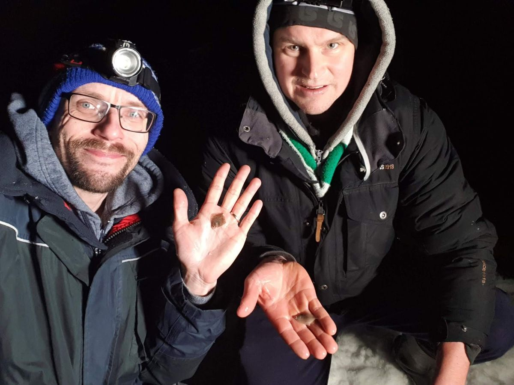
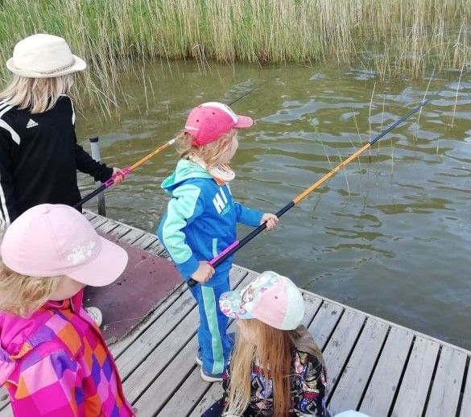
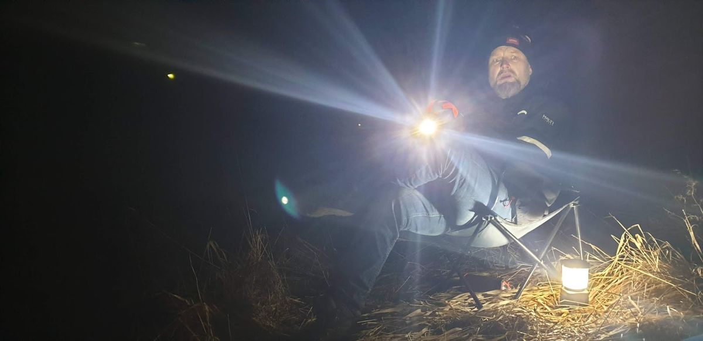
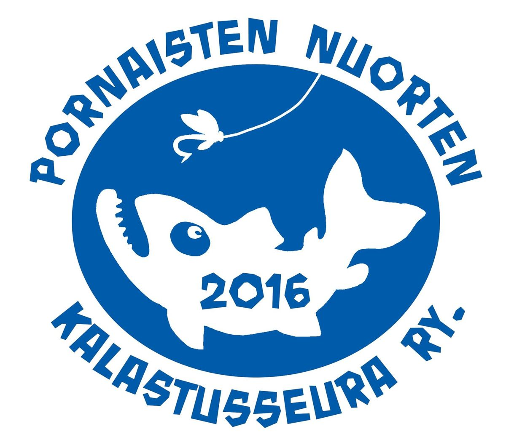
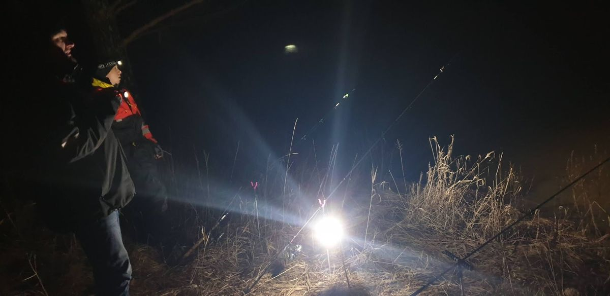

Blogitekstit · Tammikuu 2020
Tyyneltä mereltä - savisamealle joelle
Kaupallinen yhteistyö Paitakulman kanssa.

Istuskelin illalla koneen äärellä odottamassa, että Jokereiden ottelu alkaa Viaplayltä rullaamaan. Olli-Pekka johon olen tutustunut Kalamaratonin kautta laitteli viestiä.
Huomasit varmaan, että nyt olisi Lauttasaaressa TÄYDELLINEN lirkkimissää. 2 m sekunnissa tuuli ja pohjoisesta. Tässä aprikoidaan Roopen kanssa, että mitä tehdään. Tämä on itsellenikin masokistista veitsen kääntämistä haavassa: tänä iltana Padvassa on superhyvä lirkkimissää.
Aivan piinallista ajatellakin. Näyttää siltä, että menen itse tsekkaamaan lauttiksen tänä iltana, lapsilla on jo kaikki mahdolliset lajit sieltä. voin laittaa viestin, jos löytyy kivinilkkaa tai muuta kiinnostavaa.”
Tällaisen viestin kun saa innostuu sitä tarjoamaan seuralaiseksi retkelle ja niinhän siinä kävi. Auto kaartoi parkkipaikalle klo 21.30, jonka jälkeen otimme suunnan kohti Lauttasaarta.
Matka sujui leppoisasti jutellen kalalajeista ja niiden pyydystämisestä. Paljon tuli uutta tietoa minkä tallensin muistinisopukoihin uudelleen käyttöä varten.
Meri näytti parhaimpansa, kristallinkirkas vesi ja bläkätyyni pinta. Olisipa upea meremme aina yhtä kirkas.
Nyt jos koskaan olisi mahdollista löytää jotain hienoa, esimerkiksi kampeloita. Kahlailimme hietikot ja kivikot. Kävin jopa eräällä huippuspotilla näkemättä kalan kalaa. Matkalla vetäsin lipat jäisellä kalliolla ja sen seurauksena haavi-lamppuviritykseni kiinnike levisi rantakallioille palasiksi.
Tähän oli hyvä lopettaa tämä reissu. LPR lukema tippui 1,25, yritin tällä retkellä etsiä mutua, kivisimppuja ja kivinilkkaa saamatta niitä joten matka jatkuu.


Olisi pitänyt varmaan painaa Padvaan, Triipposen Juuso vetäs Triipposet ja nappasi kampelan, piikkikampelan ja pari muuta lajia ja täydensi upeaa viikonloppua vielä kuhalla sekä taimenelle. Tuolla osumatarkkuudella tulee hänelle huima vuosi!
Mustijoelle madejahtiin - puuhamies apuna


"Pornainen on iloinen yli 5 000 asukkaan kunta Uudellamaalla. Meillä maaseutuasumisen ja pääkaupunkiseudun parhaat puolet yhdistyvät toisiinsa!"
Näin lukee Pornainen.fi -kotisivujen etusivulla. Pornaisesta puhuttaessa ei ihan ensimmäisenä tule mieleen kalastus tai kalapaikka. Kunnan aluetta halkoo Mustijoki ja löytyy sieltä muutama järvi sekä lampi.
Joen potentiaalia vaelluskalavesistönä on tiedostettu ja Itä-Uudenmaan ja Porvoonjoen vesien- ja ilmansuojeluyhdistys ry. on kunnostanut vesistön virtapaikkoja useiden vuosien ajan. Muutaman padon yhteyteen on rakennettu myös kalatie. Joen hoitosuunnitelmaan voi tutustua tästä.
Unohdetaan nyt jalokalat ja siirrytään suurempien särkikaloista kertomiseen. Eteläisen suomen savisameat ja nopeasti lämpenevät jokivedet tarjoavat turpien kalastajille upeita hetkiä suurisuomuisten voimapesien osalta.
Pornaisista kajahtaa - kalastusta nuorten ehdoin!


Moni tuskin tietää missä sijaitsee pieni kunta nimeltä Pornainen. Itse sijoitin sen jonnekin Porvoon ja Mäntsälän välimaastoon siihen asti kunnes työkaverini Tuula muutti kyseiseen kuntaan asumaan ja hän kertoi sijainnin.
Pornaisissa pyöritetään myös yhtä Suomen lukuisista kalastuskerhoista joissa innostetetaan ja opetetaan nuoria kalastuksen saloihin. Kerhon tavoitteena on sama kuin Stadin Kalajunnujen kerholla, tehdään juttuja lasten ehdoin.


Olen tutustunut Pornaisten nuorten kalakerhoa pyörittävään Osku Jari Tapio Kuuselaan somen kautta ja olemme vaihtaneet ajatuksia kalastukseen liittyen useaan otteeseen. Innolla olen seurannut hänen intoa touhuta lasten parissa.
Kun rupesin miettimään madeongelle sopivaa pohjaonkipaikkaa tuli hänen lähijokensa mieleen. Osku tekee paljon kotikuntansa kalastusasioiden eteen ja yksi näistä on nuorten kalakerhon pyörittäminen.
"Ongitetaan lähes kaikki kunnan 7-luokkalaiset ja osa ala-aste ja päiväkoti ikäisistä lapsista.
Lisäksi käydään Kepakodin nuorten kanssa kalassa. Pornaisten nuorten kalastusseura ry. on perustettu vuoden 2016 tammikuun lopussa. Seurassa on jäseniä 75 joista 30 on aikuista. Keskimäärin kerhotapahtumissa käy noin 10 henkeä / kerta.
Kyllä lasten ja nuorten ehdoilla, kaikki varat käytetään seura toimintaan, ei km ja kokous korvauksiin. Itse laitan kunnan maksavan ohjaajarahan myös seuran tilille n. 600€ vuodessa ja tilat kunta antaa korvauksetta käyttöömme. Tästä voisi moni kunta ottaa mallia.
Minua motivoi, lasten ja nuorten innostuminen ja elämysten saanti kalastusharrastuksesta, ne pienet ilonhetket joista lapset pääsevät nauttimaan", kertoo Kuusela.
Pornaisten sekä Mäntsälän alueella, joella saa alle 15-vuotias kalastaa ilman erityiskalastusalueen lupia. Tämä sääntö on voimassa tästä vuodesta lähtien.
Kalastusreissun sovimme maanantai illalle 13.1. ja mukaan lähtisi myös Timi. Kohteeksi valikoitui joessa oleva laajempi suvanto ja sen montut.
Harmittavasti parhaiden paikkojen päälle oli muodostunut muutaman päivän pakkasten aikana jääkansi ja jouduimme hajauttamaan vapamme pitkin rantaa.


Reissu oli erittäin onnistunut, enkä ole pettynyt nollatauluun. Osku kertoi työskentelystään Kepakodissa Autististen asukkaiden kanssa, Pornaisten ja lähialueiden kalapaikoista ja eksyi keskusteluin Haarajoen myllyn omistajatkin.
Keskustelun keskeytti ne viisi tärppiä joista kaksi oikein mojovaa ja loput kolme pelkkää mutustelua. Saalis puhdas nolla, mutta ei harmita yhtään. Vaikka saalis jäi saamatta, elää reissun muistot ikuisesti.
Matka jatkuu viidellä lajilla, kalastustunteja takana vajaat kolmekymmentä ja reissuja viisi. LPR lukema näin tasan 1.
Seuraa ennätyksen etenemistä

Pidän kirjaa lajilistasta ja tarkemmasta retkidatasta Google -taulukossa, joka löytyy jokaisesta ennätysyrityksen postauksesta. Tästä linkistä taulukko avautuu uuteen ikkunaan.
Seurantatilanne löytyy myös blogini oikeasta yläreunasta.
Vuoden aikana ennätysyrityksessä kulkee mukaan myös tämä kalataitelija-graaffikko Sakke Yrjölän suunnittelema SPECIES FIN 53 -merkki.
Paitakulmassa painatin pipoon ja lippikseen saman merkin. Tavoitteeni on saada aikaiseksi 53 saaliskuvaa tekstin alussa tekemääni taulukkoon joissa kaikissa kuvissa näkyisi tuo kyseinen tunnus.
Paitakulma on Suomalainen perheyritys, joka haluaa panostaa laatuun ja asiakastyytyväisyyteen. Tutustu yrityksen palveluihin tästä.